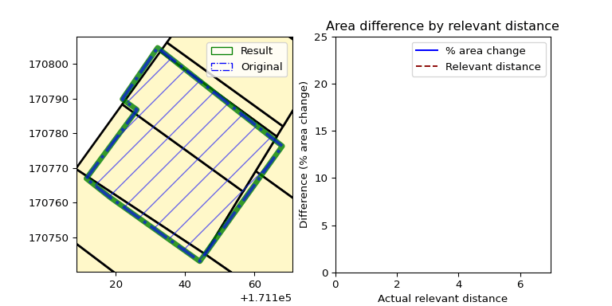

flowchart LR
A[Create Aligner] --> B[Load thematic data]
B --> C[Load reference data]
C --> D[Run process / predict / evaluate]
D --> E[Inspect or export AlignerResult]
brdr
A Python library for aligning thematic geometries (OGC Simple Features) to reference boundaries.


Quick links
What brdr does
brdr helps you:
- Align thematic boundaries to a trusted reference layer.
- Evaluate geometric change over a range of relevant distances.
- Detect stable candidate outcomes (
predictandevaluate). - Export results and metrics for QA and downstream workflows.
Core workflow
The minimal workflow is:
- Create an
Aligner. - Load thematic data.
- Load reference data.
- Run
process(...),predict(...), orevaluate(...). - Export or inspect
AlignerResult.
All three operations also support an optional processing_area to process only a selected spatial subset while leaving the rest of each geometry unchanged.
Visual intuition
The animation below illustrates how results evolve as relevant_distance increases.
- Left: thematic geometry, reference layer, and aligned result.
- Right: change metric over distance.
Stable zones in this curve are used for prediction logic.

Installation
Install from PyPI:
pip install brdrDevelopment
Dependency locking
PIP_COMPILE_ARGS="-v --strip-extras --no-header --resolver=backtracking --no-emit-options --no-emit-find-links"
pip-compile $PIP_COMPILE_ARGS
pip-compile $PIP_COMPILE_ARGS -o requirements-dev.txt --all-extrasRun tests
pytest --cov=brdr tests --cov-report term-missingDocker proof of concept
- brdr-webservice (Docker POC) on GitHub The repository includes a Docker-based proof of concept for a demo mapviewer in combination with a BRDR-webservice.
QGIS integration
brdrQ provides a QGIS plugin implementation of brdr:
Citation
- Dieussaert, K., Vanvinckenroye, M., Vermeyen, M., & Van Daele, K. (2024). Grenzen verleggen. Automatische correcties van geografische afbakeningen op verschuivende onderlagen. Onderzoeksrapporten Agentschap Onroerend Erfgoed. https://doi.org/10.55465/SXCW6218
Feedback and contributions
- Questions and usage discussions: https://github.com/OnroerendErfgoed/brdr/discussions
- Bug reports and feature requests: https://github.com/OnroerendErfgoed/brdr/issues
Acknowledgement
This software was created by Athumi and Flanders Heritage Agency.